EtherNet/IP™ Adapter3.06.02 |
 |

|
EtherNet/IP™ Adapter3.06.02 |
|
|
The CODESYS development system is available for download free of charge after registration with the CODESYS Store. Please consult the system requirements in the CODESYS Store for the development PC. It is recommended to install the full package.
To execute the CODESYS runtime on a Texas Instruments Sitara AM64x evaluation board, the standard AM64x RT Linux default image is required.
Install the CODESYS Linux ARM SL package from the Package Manager of the CODESYS development environment (Tools → Package Manager...) or the CODESYS Installer (Windows Start Menu → CODESYS → CODESYS Installer).
Start the CODESYS Installer with Administrator privileges. Identify your CODESYS installation and select Change.

Under AddOns, select the Browse tab and search for ARM64. Check the line with CODESYS Control for Linux ARM64 SL and install the package.

Install the CODESYS Linux ARM SL package from the Package Manager of the CODESYS development environment (Tools → Package Manager...) or the CODESYS Installer (Windows Start Menu → CODESYS → CODESYS Installer).
Tools → Update Linux ARM64 is added to the CODESYS development environment. The functionality in the tool window linked to this menu item had however not been fully implemented at the time of writing, thus the installation of the CODESYS runtime on the Linux target must be performed from the Linux command line. The CODESYS runtime package file CODESYS Control for Linux ARM64 SL 4.6.0.0.package is an archive that can be opened with standard utilities. It contains the directory structure below:

Copy the following two installer packages to the Linux target:
Login to the target (user: root, password: root) and install the two packages:
CODESYS Control for Linux ARM64 SL 4.6.0.0.package as downloaded from the CODESYS store. To start the CODESYS runtime, change directory to /var/opt/codesys/ and execute /opt/codesys/bin/codesyscontrol.bin /etc/CODESYSControl.cfg
Note that while an unlicensed CODESYS Control for Linux ARM64 SL runtime is time restricted to two hours, the fieldbus communication limited to thirty minutes only. You can now proceed creating a CODESYS project.
Start the CODESYS development system and create a new standard project
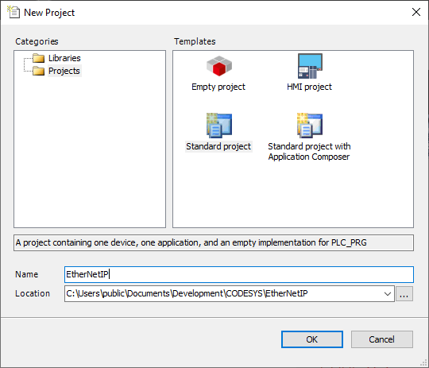
Select CODESYS Control for Linux ARM64 SL (3S - Smart Software Solutions GmbH) as device.
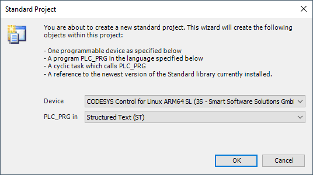
The development system creates the project structure and populates the structure of the device tree.
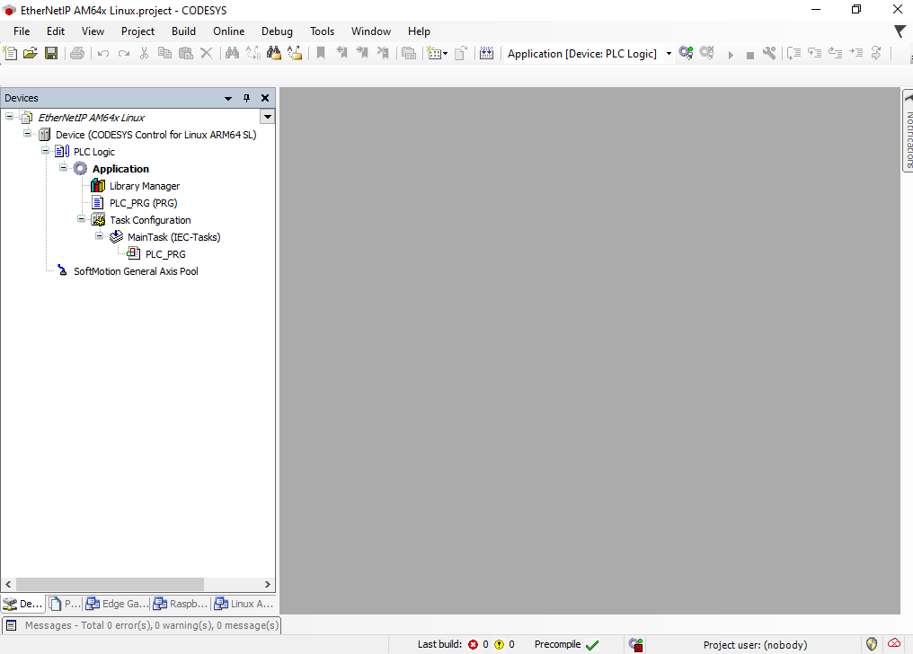
Before configuring the EtherNet/IP network, the matching device description file must be installed into the CODESYS device repository. Navigate to Tools → Device Repository in the menu system and install the files am243x-evm_tiEtherNetIP_freeRTOS.eds or am243x-lp_tiEtherNetIP_freeRTOS.eds which are part of the distribution.
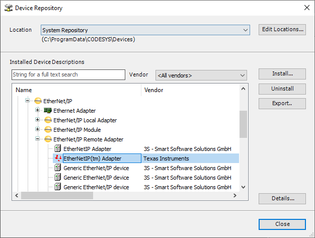
In the device tree, double click on Device to open the Device tab in the central workspace.
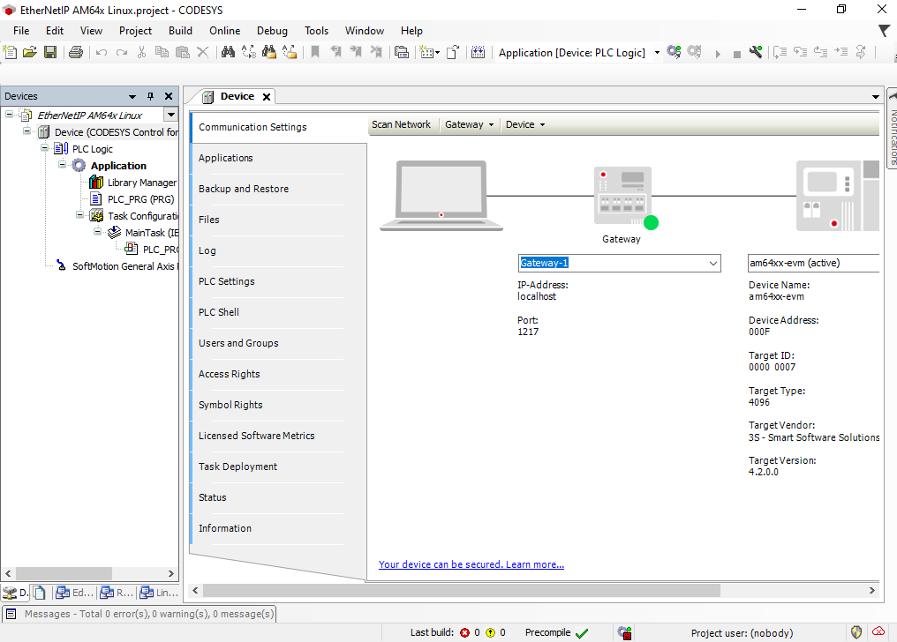
Perform a Scan Network and select the corresponding device in the Select Device dialog.
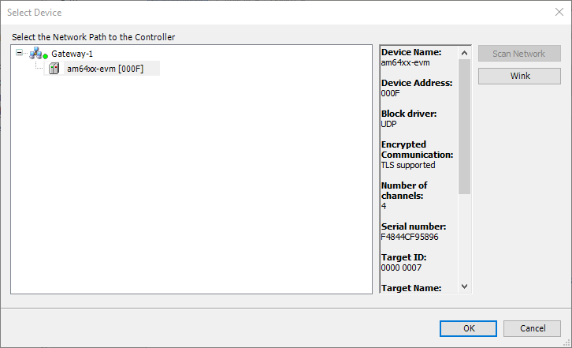
Right-clicking on Device in the project tree and add an Ethernet interface to the Device
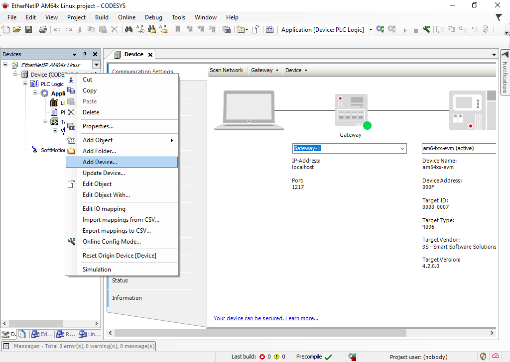
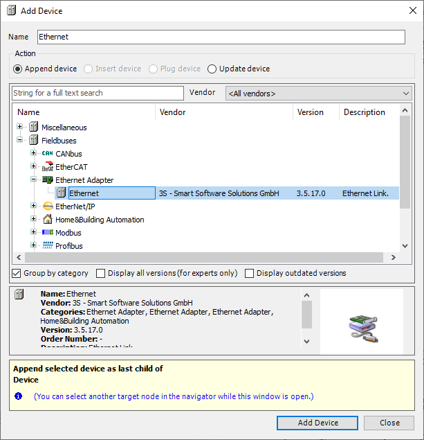
In the device tree double-click on Ethernet to open the Network interface configuration and click on Browse to select the Network interface (in the diagram above port 2) that is connected to your EtherNet/IP Adapter device.
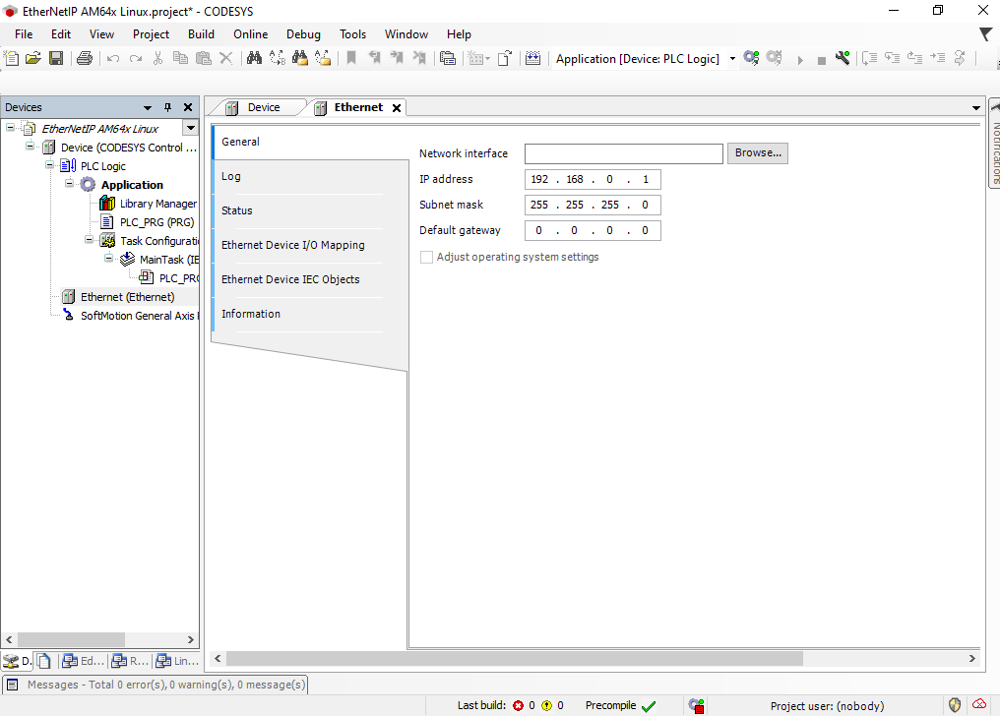
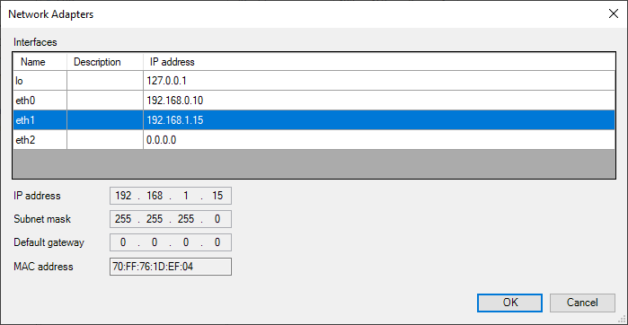
Continue to add an EtherNet/IP Scanner to the Ethernet device.
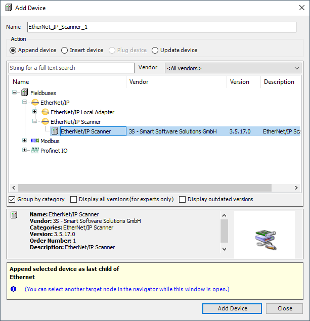
Once complete you can build your project, enter Online mode and start your application. This only starts the EtherNet/IP Scanner from where it is possible to scan for connected Adapter devices.
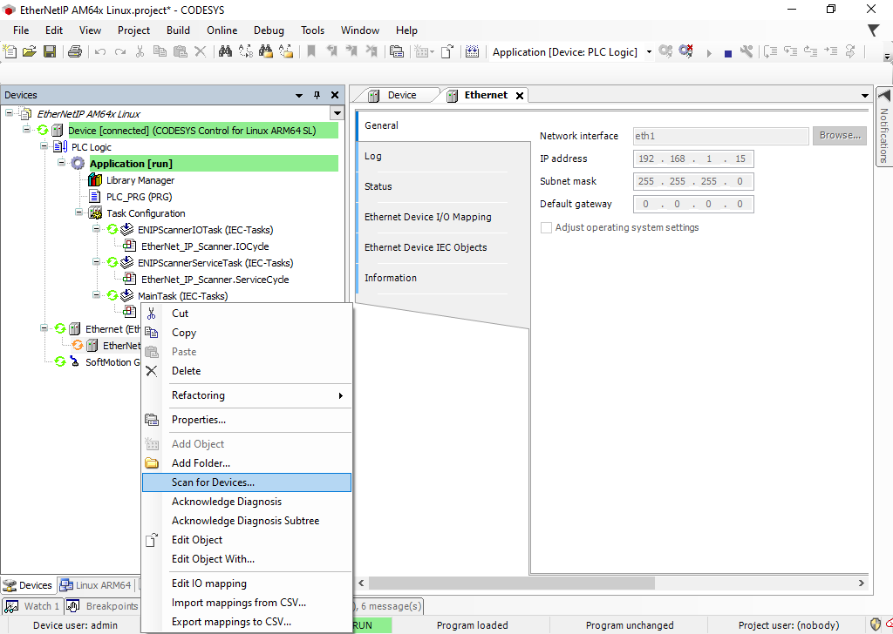
Provided the device description has been installed earlier, the scan process will identify the EtherNet/IP Adapter device which can now be copied to the project.
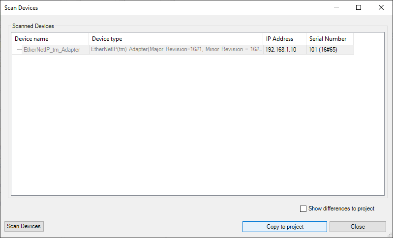
The final project structure now looks as shown below:
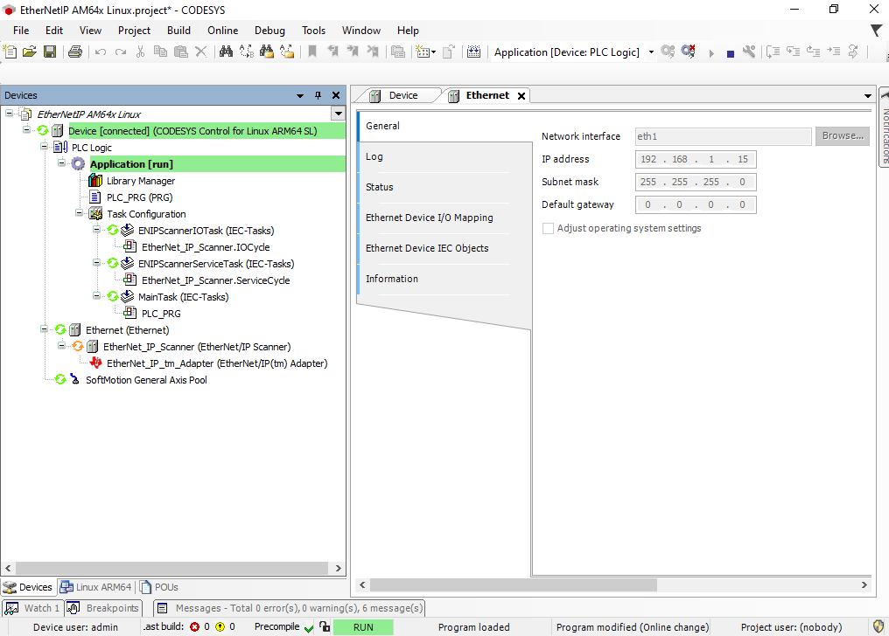
Finally, exit Online mode, re-enter Online mode to download the new project structure, and start the application.
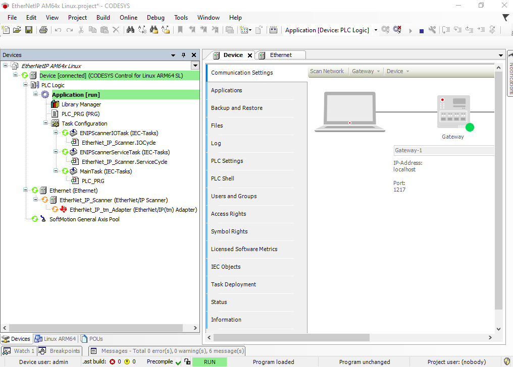
All devices are running, and you can continue with implementing your IEC 61131-3 program.
The EtherNet/IP Adapter example for AM24x implements a vendor specific object with class ID 0x0070 and attributes in the vendor specific index ranges following 0x0300. Attributes at index 0x0300 to 0x0304 are added to a producing assembly, at index 0x0308 to 0x030C to a consuming assembly. Of those, the attribute at index 0x0308 is linked to an LED array on the AM24x evaluation kit.
Below a simple PLC program coded in Structured Test is demonstrated that controls this LED array.
Start with double clicking on PLC_PRG in the project browser. An empty PLC_PRG opens in the central workspace, that by default contains the frame for the variable declaration on top and the programming area below.
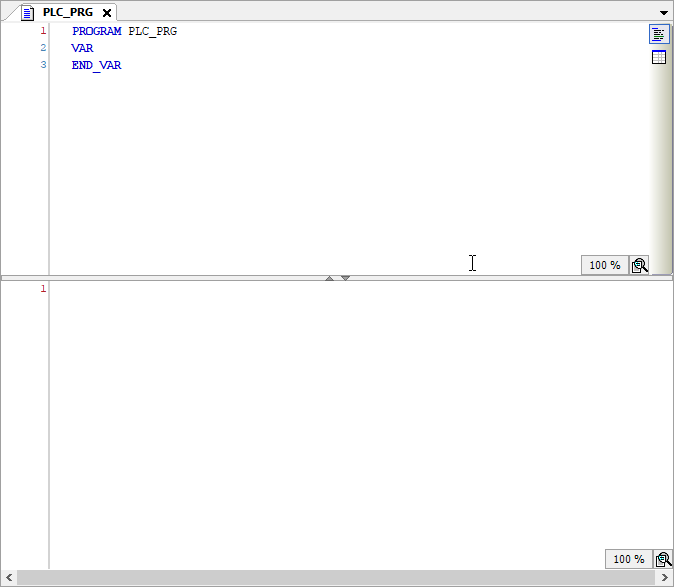
Modify the variable declaration as illustrated below:
Also create a Global Variable List by right-clicking on Application → Add Object → Global Variable List... Add one variable usiVisuOut.
The timer function block TON, which is included in the Standard Library, implements a turn-on delay. When the input gets TRUE, first a time (tCycle / 2) must elapse until also the output is set to TRUE. The example uses two such timers that alternate their states. Once the second timer elapses, a counter variable is incremented, which is then used to set the output on the target device.
Enter the code below into the programming section of PLC_PRG:
Next, the connections of the EtherNet/IP adapter device need to be configured. Double-click on EtherNet_IP_tm_Adapter in the Device tree. This opens the tab enabling the configuration of the example EtherNet/IP Adapter device. Under Connections, the requested packet interval (RPI) can be set:
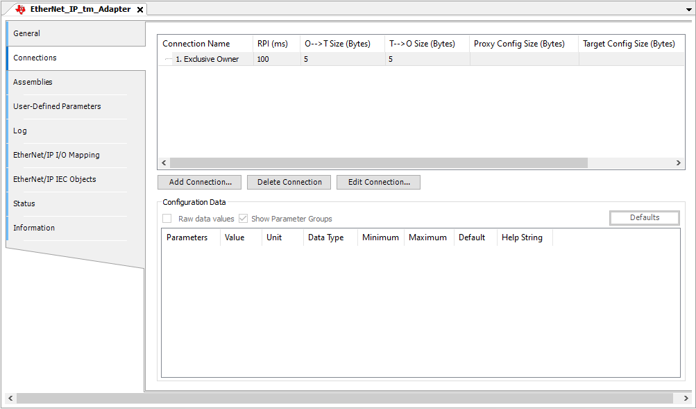
Under EtherNet/IP I/O Mapping the variables of the PLC_PRG are assigned to input or output channels declared for the Adapter device in the corresponding EDS file.
Double-click in the variable column in the Output1 row to start the Input Assistant.
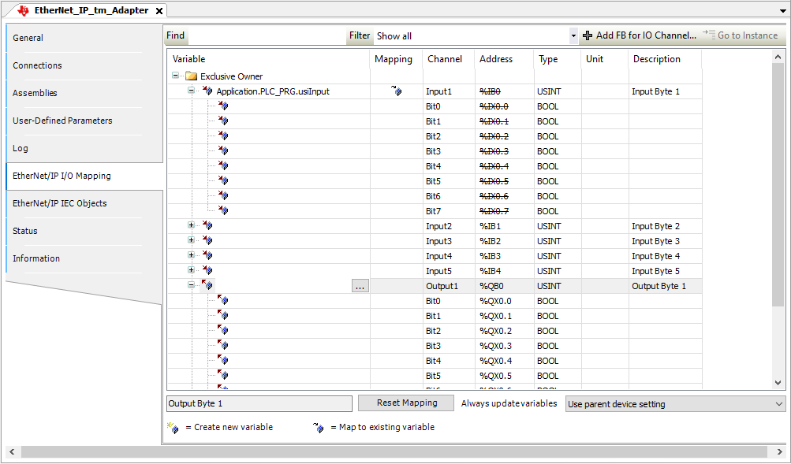
In the Input Assistant select usiOutput and confirm with OK.
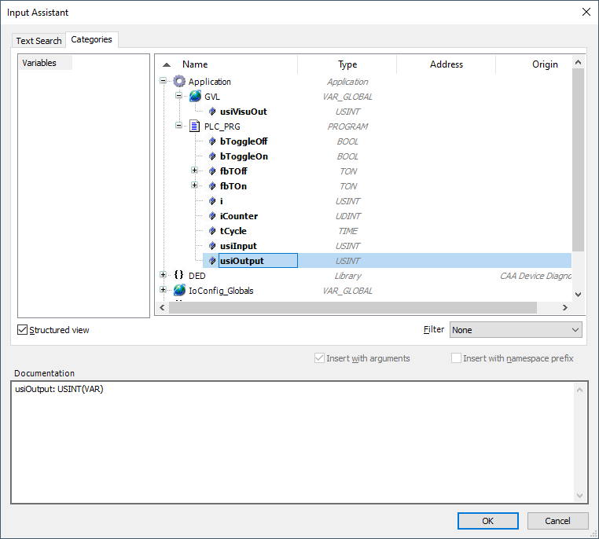
The project configuration is now finalized and can be downloaded to the CODESYS control on the AM64x evaluation board. Login to the CODESYS Control on AM64x Sitara processor again to download the application, start the application, and note the activity on the LED array on the evaluation board running the EtherNet/IP Adapter.
 1.9.8
1.9.8